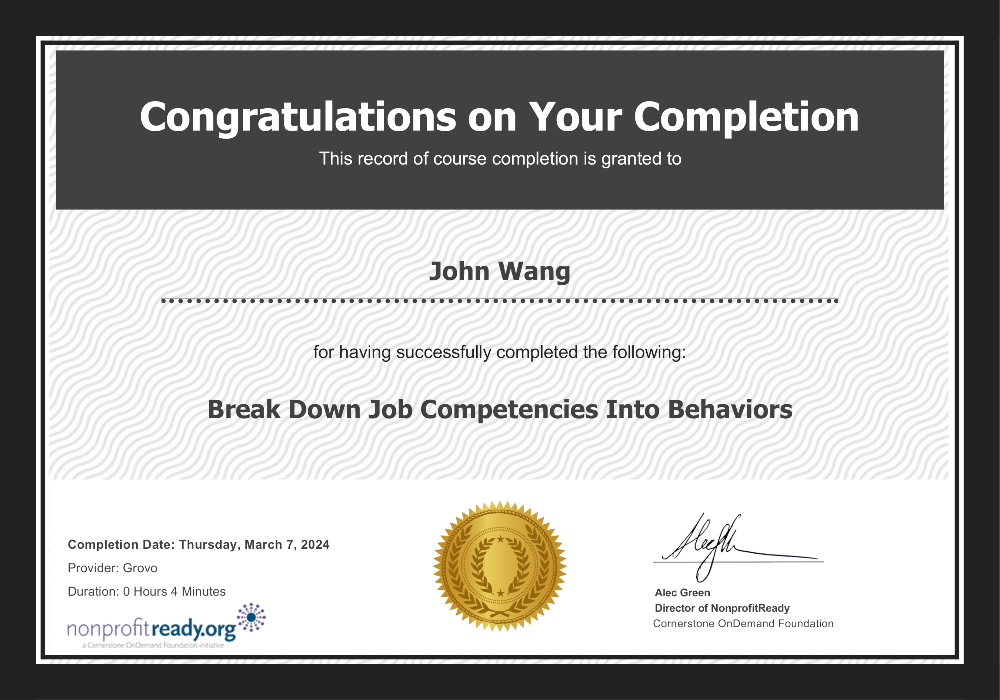

John's Management Certificates
- Fundamentals
- Team Building
- Develop High-Potential Employees from NonprofitReady
- Find the Root Cause of Performance Problems from NonprofitReady
- Know What Your Direct Reports Really Care About from NonprofitReady
- Recognize Leadership in Others from NonprofitReady
- Planning an Effective Performance Appraisal from SkillSoft
- Lead Your Virtual Team from Eleventure
- Hiring
Fundamentals (5)
The Management Styles from NonprofitReady by Cegos

Find Quick Wins as a New Manager from NonprofitReady by Grovo

Common Misconceptions of New Managers from NonprofitReady by Grovo

Stay Calm Under Pressure as a Manager from NonprofitReady by Grovo

Help Others Be Accountable from Grovo

Team Building (6)
Develop High-Potential Employees from NonprofitReady

Find the Root Cause of Performance Problems from NonprofitReady

Know What Your Direct Reports Really Care About from NonprofitReady
Recognize Leadership in Others from NonprofitReady

Planning an Effective Performance Appraisal from SkillSoft
Lead Your Virtual Team from Eleventure
Hiring (3)
Break Down Job Competencies Into Behaviors from NonprofitReady by Grovo

Prepare for a Behavior-Based Interview from NonprofitReady by Grovo

The Advantages of a Behavior-Based Interview from NonprofitReady by Grovo